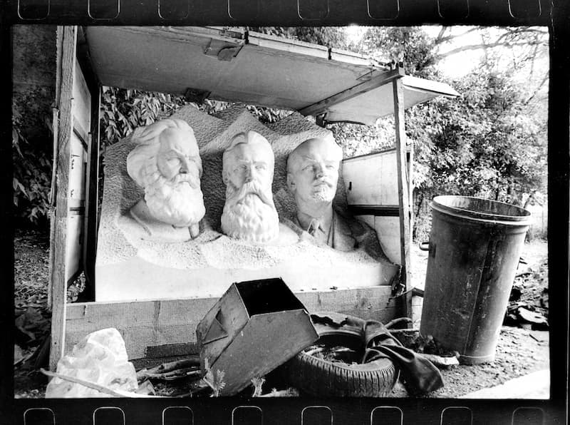
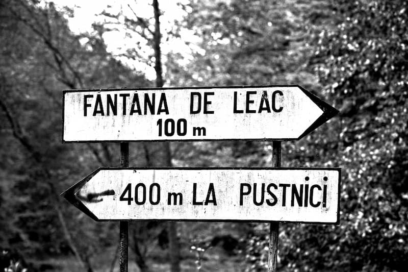

Suntem martorii pregătirii ultimei mari revoluții, cea care vrea să zguduie din temelii lumea pe care o știm, să răstoarne integral și iremediabil valorile pe care le recunoaștem, să măture din calea ei structurile și organizațiile existente. Mai corect spus, s-a declanșat faza finală a unei revoluții continue ce a început acum peste 200 de ani și al cărei efect se dorește a fi instaurarea NOII ORDINI MONDIALE a unui GUVERN MONDIAL. Iar acest ultim capitol se dorește a fi cel mai cumplit și sângeros din întreaga istorie a omenirii.
H. G. Wells, The New World Order (1939) scrie: „Foarte mulți oameni vor urî NOUA ORDINE MONDIALĂ și vor muri protestând împotriva ei.” Iar Wells nu a fost doar futurolog și autor SF de succes, ci și unul din cei mai vocali promotori ai eugeniei1. Ca și iubita lui, evreica Margaret Sanger; care, începând cu 1923, primește fonduri masive din partea familiei Rockefeller în același scop. Cu alte cuvinte, era un om al SISTEMULUI. Voi încerca în cele ce urmează să explic ce a vrut să spună în acea frază.
Desigur, cu toții ați observat o „explozie” de articole și documentare ce tratează chestiunea GUVERNULUI MONDIAL, a NOII ORDINI MONDIALE, precum și tot soiul de teme anti-sistem. Cei care le-ați studiat un pic mai amănunțit, ați putut constata că doar par a fi la fel, însă în fapt sunt grupate în două mari categorii aparținătoare unor tabere ce sunt diametral opuse. Ele par la fel pentru cititorii neavizați, deoarece temele comune sunt cu mult mai multe decât cele divergente. Asta face și ca, pe frontul de luptă anti-sistem să pară, a fi aliate.
SISTEMUL a creat mereu „alternative”, teorii și grupuri de acțiune ce păreau foarte luptătoare împotriva SISTEMULUI, pentru ca cea mai mare parte a celor nemulțumiți să se bulucească sub stindardul lor. Actualmente însă s-a pus în mișcare cea mai mare cacealma din istoria manipulării maselor, ce va depăși prin grozăvie tot ce s-a petrecut pe glob în perioada apariției, strălucirii și înfrângerii național-socialismului: s-a creat imaginea falsei Noi Ordini Mondiale (pe care o voi denumi în continuare fNOM) și se încurajează pe față (sau subtil) acțiunile de luptă împotriva ei, într-un război ce se va duce sub toate formele, atât cu pixul și discursul, cât și pe baricade sau cu arme.
Această manevră este necesară din două motive: să se distragă atenția mulțimii de la adevărații dușmani și să se canalizeze furia acesteia spre demolarea vechii societăți și, odată cu ea, chiar și a instrumentelor folosite până acum de către ELITE pentru acumularea de capital sau pentru coordonarea etapelor de pre-instaurare a guvernului mondial.
ELITELE - fiind toate practicante ale cultului paladin [cinstirea lui Lucifer-Satana] (fie că înțeleg sau nu motivul real al acțiunilor lor) - fac tot ce le stă în putință spre a elimina din mentalul cât mai multor oameni nădejdea în Domnul nostru Iisus Hristos. Astfel li se prezintă strict „alternative” lumești: revoluții și speranțe de schimbare a fNOM. Mai mult, aceste „alternative” postulează ca sigur faptul că vremurile pe care le trăim nu pot fi sub niciun chip începutul adeveririi proorociilor din Sfânta Scriptură și ale Sfinților Părinți. Astfel, SISTEMUL dorește să se asigure de faptul că un număr cât mai mic de oameni se pregătesc pentru singura luptă mântuitoare: mărturisirea și mucenicia. Astfel, un număr destul de mare de creștini sunt strict adepții acțiunilor umane împotriva SISTEMULUI, ba mai mult, îi acuză pe adevărații creștini de lașitate.
Așa se face, de exemplu, că înainte de declararea oficială a crizei, a fost promovat agresiv documentarul Zeitgeist, care atacă Federal Reserve Funds [așa-zisa bancă centrală a S.U.A., care e de fapt o bancă privată], dar și creștinismul, promovând însă NOUA ORDINE MONDIALĂ (reală), așa cum a fost ea teoretizată de vârfurile masoneriei și de cei ce au pus acum 100 de ani temelia new age-ului. Apoi, după declararea oficială a crizei, auzeam politicieni de marcă arătând cu degetul spre băncile cele rele, și promovând o schimbare de sistem și o… NOUĂ ORDINE MONDIALĂ. Trebuie înțeles că Federal Reserve le-a fost un instrument necesar și atât. Vor pune tunurile pe ea și vor renunța la ea, pentru a construi ceva cu mult mai măreț. Desigur, se va evita atingerea adevăratelor ELITE ce au creat-o și care au beneficiat de pe urma ei.
Pentru a înțelege și mai bine, să definim separat NOUA ORDINE MONDIALĂ (reală) și fNOM și de asemenea să vedem cum vor proceda.

La 1 mai 1776 - sub conducerea evreului Mayer Amschel Rothschild (în traducere „Scutul Roșu”, care se chema înainte Mayer Amschel Bauer; și-a schimbat numele în mod special pentru ce avea în plan să facă), cu sprijinul altor familii de evrei germani bogați: Wessely, Moses, Mendelsson și a unor bancheri: Itzig, Friedlander - evreul Weishaupt fondează în secret societatea „Vechii căutători de lumină din Bavaria”, care va deveni mai cunoscută sub denumirea „Ordinul Iluminaților”. Weishaupt a susținut că numele provenea din vechi scrieri și însemna „cei care dețin lumina”. Așadar, Adam Weishaupt a fost primul profet al „Ordinului” - cel care întocmise o doctrină de la care mai târziu s-au inspirat alte societăți secrete influente: „Carbonarii” lui Giuseppe Mazzini, „Liga Drepților” a lui Karl Marx sau „Decembriștii” lui Cernîșevski – și, din acest punct de vedere, poate cel mai influent om al secolului XIX. Doctrina lui, Novus Ordo Seclorum, a supraviețuit veacului și a schimbat lumea în secolul XX, urmărind: 1) desființarea monarhiei și a oricărei puteri ordonate; 2) desființarea proprietății private; 3) desființarea moștenirilor; 4) desființarea patriotismului; 5) desființarea familiei (a căsniciei și instruirea în comun a copiilor); 6) desființarea creștinismului.
Între 16 iulie și 29 august 1782, la Wilhelmsbaden a avut loc al doilea Congres Masonic, sub președinția baronului de Braunswick. Congresul de la Wilhelmsbaden a încercat să facă o conciliere între diverse secte francmasonice: Rosicrucieni, Necromanți, Cabaliști Și Umanitariști. La congres, a fost prezent și Adam Weishaupt, care a reușit să fuzioneze Ordinul Iluminaților cu masonii din lojile engleze și franceze. Congresul mai este important și pentru că a coincis cu emanciparea evreilor din Imperiul Habsburgic. Totodată, a fost pus la punct în mare secret planul Revoluției Franceze, care se va declanșa șapte ani mai târziu. Contele de Virieu, un mason care a participat la congresul secret de la Wilhelmsbaden, i-a dezvăluit ulterior unui prieten: „Nu pot să-ți spun ce s-a hotărât acolo. Pot doar să-ți spun că este mult mai grav decât îți închipui tu. Conspirația care s-a pus în mișcare la Wilhelmsbaden este atât de perfect organizată, încât nu au scăpare nici monarhia, nici biserica.” Această doctrină este baza aceleia de „stânga”. De aceea și simbolurile: roșul, caracteristic stângismului, ziua de 1 mai, celebrată de întreaga „stângă”, etc.
În fapt, NOUA ORDINE MONDIALĂ reprezintă faza finală a unei revoluții continue ce a început atunci și care a cuprins încet-încet toată omenirea. Iar această doctrină va sta la baza GUVERNULUI MONDIAL. O mare revoluție punctată în cursul istoriei de multe revoluții mai mici - industrială, burgheză (1848), bolșevică, sexuală, etc. - necesare pentru schimbarea din temelii a vechilor structuri statale, politice, sociale, a tradițiilor și a concepțiilor despre lume și viață. Începând cu sfârșitul secolului XVIII, ELITELE ce au inițiat această acțiune au mers pe două fronturi:
a) economic: bănci, finanțe, industrializare, acumulare de aur și pietre prețioase, controlul zăcămintelor de cupru sau petrol. Și:
b) activitatea masoneriei: crearea unei noi clase politice, revoluții, cultură, ideologii, crearea de „alternative”.
Mayer Amschel Rothschild (1744 – 1812), a fost și fondatorul imperiului bancar Rothschild, cea mai de succes familie din istorie. Acesta și mai apoi fii săi au creat acest imperiu cu întindere europeană, determinând explozia revoluției industriale pe continent; au influențat dezvoltarea economică pe direcția deja cunoscută a folosirii combustibililor fosili, inclusiv dezvoltarea transporturilor; au modernizat și stăpânit sistemul bursier, bancar, financiar; au influențat direct politicul, au finanțat mereu ambele tabere ale unui război, au pus la punct un sistem continental de informații rapide, etc. La sfârșitul secolului 19, controlau peste jumătate din întreaga bogăție a planetei. Desigur, ei au fost vârful unui iceberg, partea vizibilă a unui sistem piramidal în care au fost ajutați de prieteni mai puțin vizibili opiniei publice. În SUA, i-au finanțat pe coloșii Rockefeller (petrol), Andrew Carnegie (oțel), Harriman (căi ferate), J. P. Morgan și pe bancherii ce au pus bazele [băncii centrale] Federal Reserve Funds.
Salomon Mayer (1774-1855) – fondator al Rothschild Banking Family of Austria, care a determinat dezvoltarea economică a Austriei.
Nathan Mayer (1777-1836) – fondator al Rothschild Banking Family of England. (Ca o paranteză, s-a căsătorit cu o rudă a lui Karl Marx.) În afară de domeniul financiar-bancar pe care a ajuns să-l stăpânească în insulă, a colaborat direct cu guvernul în politica externă și de securitate a statului. De asemenea, a dezvoltat un serviciu de informații privat și a finanțat tabăra anti Napoleon. Astfel - folosindu-se de sistemul propriu de informații, de influență și de credibilitate - după bătălia de la Waterloo, pierdută de francezi, au adus în Anglia știrea falsă că ar fi fost de fapt invers, panicând populația. Bursa a căzut și ei au cumpărat pe nimic tot ceea ce i-a interesat și averea lor a crescut fabulos. La scurt timp, influența lor în Bank of England era deja determinantă. A mai lucrat cu guvernul prusac și cu cel spaniol.
Fiul lui Nathan Mayer, Lionel de Rothschild (1808-1879), a finanțat și a influențat guvernul britanic în chestiunea Canalului Suez. A investit masiv în Franța. Fiul său, Alfred de Rothschild (1842-1918), a devenit director al Bank of England și a reprezentat guvernul britanic la International Monetary Conference din Bruxelles în 1892. Au mai dezvoltat afaceri în Africa de Sud.
Calmann (Carl) Mayer (1788-1855) – fondator al Rothschild Banking Family of Naples (Napoli).
James Mayer de Rothschild (1792-1868) – fondator al Rothschild Banking Family of France. A determinat transformarea Franței într-o putere industrială. La vremea sa, a fost cel mai bogat om al planetei. A fost susținătorul lui Gioacchino Rossini, Frédéric Chopin, Honoré de Balzac, Eugène Delacroix și Heinrich Heine.
(Specificație: Când citiți mai sus că „au făcut afaceri”, gândiți-le ca pe ceva „mega”, la nivel național sau continental. În țările unde erau prezenți direct, reprezentau o forță bancară mult superioară întregii „concurențe” luate la un loc.)
Familia avea obiceiul să se căsătorească între membrii săi. În cazul în care 2-3 generații făceau aceasta consecutiv pe o line a arborelui genealogic, rezultau sinucigași și nebuni.
Cei mai sus numiți au fost prieteni cu conducătorii politici din țările respective.
După dramaticul al doilea război mondial, familia a intrat într-un OBLIGATORIU și NECESAR con de umbră, lăsând unui grup prieten o bună parte a domeniului de activitate. Asta nu înseamnă că au devenit minusculi. Actualmente, banca Rothschild este una din cele mai mari bănci de investiții din lume.
Cu toate că s-au folosit intens de formidabila structură piramidală în plan economic, principala sarcină a rămas totuși crearea unei noi clase politice, prin revoluții, cultură și ideologii „alternative”. Totul trebuia să apară însă ca fiind rodul unui proces firesc evolutiv al omenirii, de aceea au încurajat de exemplu teoria evoluționistă.
Uneori activitățile a) și b) mergeau pe față mână de mână, alteori efectele activităților din b) păreau diametral opuse, fiind în fapt vorba de acele „alternative”. Dar mereu exista un dușman comun: creștinismul. Nu permite spațiul să dezvolt aici o analiză detaliată a acestei întregi mișcări, însă cine citește cea mai mare parte a articolelor blogului http://saccsiv.wordpress.com va înțelege. Veți descoperi astfel că, la capitolul finanțare sau fondare a tuturor acestor acțiuni sau instituții, regăsim aceleași nume de familii dominante.
Pe scurt, ELITELE au creat Federal Reserve Funds, Council on Foreign Relations, Bilderberg Group, Comisia Trilaterală și au generat războaiele mondiale pentru a veni apoi cu soluțiile salvatoare: Liga Națiunilor și ONU, ca etape ale viitorului GUVERN MONDIAL; au creat instrumentele financiare necesare în aceste etape: BANCA MONDIALĂ, FMI; au creat crizele economice, au format UE.
Asta, pe de o parte. Pe de altă parte, au susținut, inițiat și finanțat revoluțiile de la 1848, pe a lui Simon Bolivar, pe aceea condusă de Garibaldi, pe cea bolșevică, nazistă, sexuală (inclusiv promovarea homosexualității); au promovat avorturile și eugenia. Ideologic, au apărut socialismul și comunismul, ce uneori au figurat a fi „alternative” la capitalism. Maselor li se arăta cu degetul sistemul financiar-economic corupt și li se oferea soluția unei societăți științifice egalitariste anti-teiste. În fapt însă, la vârf, ELITELE le conduc pe amândouă.
La sfârșitul secolului 19 și începutul secolului 20, ia avânt Theosophical Society, organizația Thule Society și începuturile a ceea ce mai târziu avea să fie cunoscut ca „New Age”, inițiate de personaje cu o puternică influență asupra societății contemporane precum: Madame Blavatsky, Alice Bailey, Aleister Crowley. Voi prezenta câteva detalii despre aceste ultime personaje, ce toate au vorbit despre GUVERNUL MONDIAL al NOII ORDINI MONDIALE.

A avut legături apropiate cu ritul scoțian masonic (Albert Pike). (Jackson Spielvogel și David Redles, de la Simon Wiesenthal Center, au fost nevoiți să accepte că lucrările maleficei femei l-au influențat decisiv pe Adolf Hitler.) Născută în imperiul rus, Madame Blavatsky emigrează în 1873 la New York și începe o „carieră” în spiritism (mai mult agită teorii decât face demonstrații de extracorporalitate, levitație, telepatie și altele din zona paranormalului). În 1875, fondează Theosophical Society. Ulterior, începe să viziteze India. În 1886, se stabilește în Germania, unde scrie o mare parte din Secret Doctrine, o lucrare plină de teorii rasiste, ce spunea că i-a fost inspirată de maeștrii non-umani din zona Tibetului (acei așa numiți „șefi secreți”).
Aceasta scria în „The Secret Doctrine”, vol. 1, pag 319 – 320: „În realitate, „Lucifer” sau „Luciferus” este numele unei entități angelice ce stăpânește absolut peste lumina adevărului și peste lumina zilei. (…) Lucifer este lumina divină și terestră, «spirit sfânt» și «satan» în același timp.” (Doamne, iartă-mă că am citat asemenea blasfemii!)
Din Theosophical Society, pornesc două ramuri ale unei malefice unități în diversitate: New Age (Alice Bailey) și Thule Society.
Thule Society (Rudolf Steiner, Rudolf Sebottendorff (mason), Philipp Stauff, Anton Drexler, Rudolf Hess) din Germania a fost piatra de temelie a Nationalsozialistische Arbeiterpartei (Partidul Național Socialist) al lui Hitler.
Alice Bailey (1880–1949) a fost inițiatoarea amplei mișcări New Age, continuatoare a Theosophical Society, ale cărei baze au fost puse de către Madame Blavatsky. (Soțul ei, Foster Bailey (1888 – 1977), a fost mason de grad 32.) Între 1919 și 1949, Alice Bailey a scris multe lucrări dictate de către „maeștri ai înțelepciunii” non-umani din zona Tibetului. Mărturisea că Lucifer este un zeu al înțelepciunii, socotit pe nedrept înger căzut de către creștinism.
În 1940, Alice Bailey a prevăzut victoria aliaților (într-o perioadă în care multe state încă nu intraseră în război, iar tabăra acestora încă nu se formase oficial) și stabilirea de către aceștia, după marea conflagrație, a unei NOI ORDINI MONDIALE, ce va duce umanitatea la un foarte ridicat nivel de civilizație. Să ne amintim că la 14 august 1941, într-un moment în care SUA încă nu intrase în război, a fost schițată Carta Atlanticului, adevărata fundație pentru majoritatea tratatelor și organizațiilor internaționale (inclusiv Națiunile Unite și cele financiare) de după cel de-al doilea război mondial, cu ocazia Conferinței Atlanticului (nume de cod Riviera), la care au participat președintele SUA Franklin D. Roosevelt și premierul britanic Winston Churchill (ambii masoni), însoțiți de consilierii lor apropiați. Interesant este că, în cadrul acestei conferințe, se specifică necesitatea unei „noi ordini mondiale”.
Alice Bailey este întemeietoarea trustului Lucifer Publishing Company, redenumit mai apoi Lucis Trust. Lucis Trust este o organization non-guvernamentală în cadrul Națiunilor Unite!!! La indicația Lucis Trust-ului, în clădirea ONU se află o cameră de rugăciune cu însemnele acesteia, unde „greii” se adună înaintea fiecărei ședințe generale. Un „șef secret” non-uman i-a dat în 1937 lui Bailey „Marea Invocație”. Aceasta a fost folosită inclusiv după evenimentele din 11.09.2001 de către Findhorn Foundation (pe care o invocă de la înființarea ei). Este o invocație folosită și de mișcarea new-age UFO. Findhorn Foundation a fost fondată în 1972. În 1997, devine membru al Conference of Non-Governmental Organizations în Consultative Relationship with the United Nations (CONGO) și membru fondator al mai multor grupuri active în UN Headquarters. Între care amintim The Spiritual Caucus, în al cărei site oficial găsiți fotografia camerei de meditație a ONU, camera de rugăciune de care aminteam mai sus și căreia îi face propagandă.
Cuvinte de laudă pentru această cameră-templu a adus și misticul Dag Hammarskjöld (1905–1961), al doilea Secretar General al Națiunilor Unite. Individul avea planuri mărețe cu ONU, dar a murit într-un accident neelucidat nici până în zilele noastre.
Alt „greu” al Națiunilor Unite, mare iubitor de draci, este Robert Muller (1923), asistent al Secretarului General de peste 40 de ani, poreclit „filosoful” Națiunilor Unite, pentru liniile directoare pe care le trasează. E plin de idei despre guvernarea mondială. Recunoaște că este influențat de Alice Bailey, pe care o admiră pentru că a fost contactată de „maeștri ai înțelepciunii”… (Analiștii fenomenului sunt de acord că lucrările lui Bailey și Rudolf Steiner și teosofia în general au influențat crearea „religiilor” UFO, inclusiv Order of the Solar Temple.)
În lucrarea sa „The Externalization of the Hierarchy”, Alice Bailey scria:
„NOUA ORDINE MONDIALĂ va recunoaște că producția lumii, resursele naturale ale planetei și bogățiile sale nu aparțin niciunei națiuni, ci vor fi împărtășite tuturor. Nu vor mai exista națiuni la categoria «a avea», iar altele la polul opus. Printr-un proces echitabil și corect, se va organiza distribuția grâului, petrolului și mineralelor în funcție de nevoile fiecărei națiuni și popor. Toate acestea vor fi stabilite în raport cu întregul planetar.”
„NOUA ORDINE MONDIALĂ se va baza pe recunoașterea faptului că toți oamenii sunt egali la origine, doar că se află la diferite stadii ale dezvoltării evolutive. Integritatea personală, inteligența, viziunea și experiența, la care se va adăuga și bunăvoința, vor indica viitorii conducători.”
„NOUA ORDINE MONDIALĂ va fi fondată pe un sentiment de responsabilitate. Regula va fi «toți pentru unul și unul pentru toți»”.
„În perioada de pregătire a NOII ORDINI MONDIALE, se va reglementa dezarmarea. Aceasta nu va fi opțională. Niciunei națiuni nu-i va fi permis să producă echipamente în scopuri distructive sau să violeze integritatea altei națiuni.”
„NOUA ORDINE MONDIALĂ trebuie să fie destinată pentru o lume care a trecut printr-o criză distrugătoare. NOUA ORDINE MONDIALĂ trebuie să pună bazele pentru o viitoare lume, posibilă doar după o perioadă de timp de recuperare și reconstrucție.”
Crowley (1875–1947) a fost maestru mason și bisexual. În 1947, înainte de a muri, a lăsat o schiță a înfățișării unui „șef secret”, una din acele creaturi non-umane din zona Tibetului ce au influențat și au dictat lucrări theosofice precum cele ale madamei Blavatsky și Alicei Bailey (toți trei fiind întemeietori ai New Age-ului) sau Benjamin Creme (cel ce spunea în 1959 că aceștia i-au transmis că după aproximativ 20 de ani va apare pe pământ „maestrul maeștrilor”, iar în 1982 declara: „Cristul este printre noi!”) În acea schiță, bipedul arată aidoma extratereștrilor din „cultura UFO”.
Ca și ceilalți, Crowley și-a numit clar stăpânul: Lucifer. A influențat organizațiile oculte Golden Dawn și Ordo Templi Orientis. Cea mai cunoscută lucrare a sa este The Book of the Law, al cărei text central este noua filosofie a vieții denumită „Thelema”, a cărei lozincă „Do what thou wilt!” („Faceți ce doriți!”, în engleza veche) a influențat decisiv mentalul colectiv al generației tinere începând cu anii ‚60. Această filosofie a primit-o în Egipt, în timpul unei experiențe mistice din 1904, ocazie cu care zeul (dracul) Horus l-a informat că a început o nouă epocă magică, al cărei profet va fi Crowley. Tot atunci, Horus (autonumit „zeul văzduhului”, „Stăpânul Noii Ere”, „Bestia” și „Prințul-preot”) i-a dictat și textul cărții. Crowley a practicat ritualuri magice sexuale cu femei și bărbați. A avut strânse legături cu Iluminații.
Pentru foarte mult timp, a mai fost și agent al serviciilor secrete britanice, având la un moment dat misiunea de a compromite idealurile germane sau irlandeze, prin propagandă aberantă. A fost unul din cei ce s-a ocupat cu intoxicarea serviciilor secrete germane cu „informația” că luxosul și gigantul transoceanic RMS Lusitania ar transporta cantități uriașe de materiale de război și că încearcă să păcălească blocada submarinelor nemțești. Acest fapt a dus la dramatica scufundare a vasului civil (al doilea dezastru ca mărime după Titanic) și a reprezentat motivul intrării SUA în război. În același timp, își promova articole în ziarele nemțești The Fatherland și The International.
A folosit un spectru larg de stupefiante în cadrul experiențelor sale magice. Vedetele rock, inclusiv mișcarea hippie îl considera un soi de zeu-patron al lor.
Pentru cititorii atei, care nu cred în existența diavolului, trebuie înțeles că personajele de mai sus (precum și vârfurile masoneriei sau ale cămătăriei planetare) sunt de altă părere și încă mai mult, sunt practicanți ai cultului paladin (închinarea la Lucifer). Acest aspect este foarte important în întreaga ecuație, deoarece tot ei încurajează ateismul cu un singur scop: pentru a avea la dispoziție o masă de manevră cât mai mare.
În toată această lucrare generală, dominarea componentei economice (bănci, finanțe, industrializare, acumulare de aur și pietre prețioase, controlul zăcămintelor de cupru sau petrol) nu este un scop în sine, ci o unealtă. ELITELE conducătoare din vârful piramidei nu acumulează strict dintr-o lăcomie fără sfârșit, ci pentru a controla. De fapt, deja au ajuns să aibă atât de mult, încât au hotărât declanșarea ultimei etape, un cumul de crize (recesiune, foamete, mari mișcări stradale, război cumplit) pentru ca mai apoi să prezinte soluția: instaurarea GUVERNULUI MONDIAL al NOII ORDINI MONDIALE de STÂNGA. De aceea s-a pus în mișcare în întreaga lume, în mare forță, monstrul roșu, cel ce se consideră a fi primit o rană de moarte după căderea blocului comunist. De aceea tuturor politicienilor de stânga li s-a ordonat să urle pentru necesitatea schimbării. Pe diferite tonalități, de la Obama și până la anarhiști.
Actualmente, este reprezentată de întreaga categorie de unelte ce le-au fost necesare de-a lungul timpului pentru acumularea de capital și realizarea etapelor intermediare edificării GUVERNULUI MONDIAL: instituții financiar-bancare, organizații internaționale considerate a fi în slujba grupurilor de interese avide de bani și putere, organisme de tip Bilderberg, masoneria, etc. Toate acestea sunt prezentate a fi conduse de indivizi ce urmăresc strict o acumulare masivă de capital și care au o avidă dorință de a conduce întreaga planetă.
fNOM este prezentată a dori un imperiu mondial al răului, condus de bancheri și corporații, uneori acceptându-se că au interese în această stăpânire și evreii și/sau masoneria. Dorințele acestora sunt însă prezentate a fi strict de natură materială. NOM însă folosește acumularea de capital și resurse strict ca mijloc, iar nu ca scop. NOM acționează (precum am arătat mai sus) la punerea în practică a programului Iluminaților, pentru schimbarea din temelii a societății, pentru răsturnarea valorilor, pentru îndobitocirea maselor, pentru promovarea avorturilor, sexualității, homosexualității, într-un cuvânt acționează împotriva celor descrise în Sfânta Scriptură a fi bune și promovează tot ce este descris a fi rău. NOM este prin definiție anti-creștină. Dar aceste diferențe sunt aproape imposibil de înțeles pentru ne-creștini și foarte greu de înțeles pentru creștinii ce nu realizează că vremurile apocaliptice bat la uși.
Să ne reamintim câteva citate.
„NOUA ORDINE MONDIALĂ trebuie să fie destinată pentru o lume care a trecut printr-o criză distrugătoare. NOUA ORDINE MONDIALĂ trebuie să pună bazele pentru o viitoare lume, posibilă doar după o perioadă de timp de recuperare și reconstrucție” (Alice Bailey).
Henry Kissinger, la conferința Bilderberg Group din Evian, Franța, 1991: „Azi, America ar fi scandalizată dacă trupele ONU ar intra în Los Angeles pentru a restabili ordinea [referindu-se la protestele din 1991]. Mâine - ea ne va mulțumi! Asta este cu atât mai evident dacă li s-ar spune că există o amenințare externă [un atac terorist sau o invazie extraterestră], fie ea reală sau doar declarată, care ar amenința existența Americii. În acest fel, toate popoarele lumii ne vor ruga să îi scăpăm de această nenorocire. Toată lumea se teme de necunoscut. Când le vom pune pe tapet acest scenariu, drepturile omului vor fi cedate de bunăvoie în favoarea garantării bunăstării și a siguranței de către Guvernul Mondial.”
David Rockefeller zicea așa (la 5 iunie 1991), cu privire la prestația presei față de deciziile Grupului Bilderberg: „Suntem recunoscători conducerilor publicațiilor The Washington Post, The New York Times, Time Magazine și altor mari publicații ai căror directori au participat la întâlnirile noastre și au respectat promisiunea lor de discreție pentru ultimii 40 de ani. Ar fi fost imposibil pentru noi să dezvoltăm planul nostru global dacă am fi devenit subiecți ai luminilor presei în toți acești ani, dar lumea este mult mai sofisticată și mai pregătită acum să înainteze spre o guvernare globală…”
David Rockefeller: „Tot ce avem nevoie este o criză majoră, iar națiunile vor accepta Noua Ordine Mondială.”
Guvernatorul Nelson Aldrich Rockefeller (New York), într-un articol intitulat „O chemare la construirea unei noi ordini mondiale” (New York Times, februarie 1962): „Națiunile Unite nu au fost și nu sunt capabile să aducă o nouă ordine mondială, cerută de evenimentele actuale. Este necesar ca SUA să preia conducerea tuturor popoarelor și să pună în practică conceptele și aspirațiile de suveranitate națională printr-o viziune federală.”
George Soros, la Forumul Economic de la Davos, Elveția, 27 ianuarie 1995: „Lumea are nevoie de o nouă ordine mondială și vă avertizez că urmează o perioadă de puternică dezordine în întreaga lume.”
George Soros, despre actuala criză: „Aș putea declara în mod oficial că aceasta este o criză care se diferențiază în mod categoric de celelalte, este cea mai mare criză cu care ne-am confruntat până acum și cu siguranță va avea repercusiuni de lungă durată. Este finalul unei ere și se vor întâmpla multe transformări. Cei care se așteaptă să își reia afacerile ca până acum este clar că nu înțeleg ce se întâmplă”.
James Paul Warburg, declarație în fața Senatului SUA pe 7 februarie 1950: „Vom avea un Guvern Mondial, fie că ne place, fie că nu ne place. Singura întrebare este dacă acest Guvern Mondial va fi adoptat prin cucerire sau prin accept.”
Deci au nevoie de o megacriză… Iar aceasta a început deja, odată cu cea financiară. Dar, după cum am mai spus, este de fapt vorba despre un cumul de crize ce va mai include: foamete, pandemii, schimbări climatice, ample mișcări de stradă, război. Pentru că așa poți controla masele, pentru că doar astfel le poți prezenta apoi „soluția”: GUVERN MONDIAL al NOII ORDINI MONDIALE.
Așa au procedat în cazul tuturor etapelor majore de până acum: revoluția franceză, cea bolșevică, războaiele mondiale. Aceste crize erau atât de mari, încât lumea terifiată acceptă „soluțiile” prezentate, în fapt pași în edificarea GUVERNULUI MONDIAL.
Președintele Woodrow Wilson, chiar dacă ascultător, a spus totuși ceva remarcabil (când s-a trezit și a regretat rolul de marionetă în mâna unor ELITE prea ticăloase):
„Unii dintre cei mai mari oameni din Statele Unite, din domeniul comerțului și producției, se tem de ceva. Ei știu că undeva există o putere atât de organizată, atât de subtilă, atât de atentă, atât de completă, de perseverentă încât nu au curajul să o vorbească de rău sau să o condamne, decât în șoaptă”.
PĂPUȘARII au creat crize și războaie și au finanțat mereu ambele tabere. Se spune că iluminații doreau trei războaie mondiale pentru așezarea lucrurilor pe făgașul dorit de ei. Albert Pike a și confirmat-o.
Primul război [mondial] a fost declanșat pentru destrămarea marilor imperii suspecte ca fiind neloiale noii forțe, pentru capitalizarea PĂPUȘARILOR, pentru pregătirea celui de-al doilea și pentru primul pas spre GUVERNUL MONDIAL, anume Liga națiunilor (1919).
Al doilea război [mondial] a pornit în jurul chestiunii evreiești, ELITELE folosind, după terminarea lui, etnia precum un zid protector, un formidabil sistem datorită căruia nu poți zice ceva împotriva lor, căci se declanșează automat reacții de combatere a „anti-semitismului”. Să ne amintim de dr. Nahum Goldman, (1894-1982), președinte al World Zionist Organization, ce avertiza în 1958 la World Jewish Conference în Geneva: „Un declin al puternicului curent anti-semitism sincer ar putea constitui un nou pericol pentru supraviețuirea evreiască. Dispariția anti-semitismului va avea efecte foarte negative asupra activității noastre”. Apoi, [al doilea război mondial] a dus și la formarea ONU (1945) și a tuturor organismelor financiare mondiale din ce în ce mai centralizate: Banca Mondială (1945), FMI (1944), Uniunea Europeană și Consiliul Mondial Al Bisericilor.
Uneori, crizele erau mai mici, în funcție și de ceea ce se urmărea; însă pentru ca efectul să fie maxim, aveau grijă să „avertizeze”. În 1907, de exemplu, Jacob Schiff declara într-un discurs la New York că, fără o bancă centrală care să aibă un control adecvat, țara va aluneca înspre una dintre cele mai severe crize din istorie.
Apoi - după criza artificială din 1907, „rezolvată” de J. P. Morgan - în 1908 Congresul îl însărcinează pe Nelson W. Aldrich cu descoperirea cauzelor și cu căutarea soluțiilor pentru prevenirea crizelor. Acesta, după o vizită la „greii” europeni din finanțe-bănci (Rothschild și prietenii), se întâlnește (în noiembrie 1910, la Jekyll Island Club) cu Paul Warburg (Kuhn, Loeb & Co.), Frank A. Vanderlip (din partea National City Bank of New York), Henry P. Davison (din partea companiilor J. P. Morgan), Charles D. Norton (din partea First National Bank of New York), Benjamin Strong (reprezentant J. P. Morgan), în cel mai mare secret posibil, și pun bazele Federal Reserve Funds, în conformitate cu înțelegerea prealabilă dintre Aldrich, Warburg, J. P. Morgan, Rockefeller. Secretul era necesar, deoarece opinia publică nu ar fi acceptat o „bancă națională” creată de bănci private. De abia în 1913 este recunoscută oficial de către Woodrow Wilson, influențat fiind de Bernard Baruch.
Odată cu anarhismul și revoluțiile bolșevică și național-socialistă, apar principalele „alternative” la SISTEM. Ele păreau a lupta împotriva capitalismului, al sistemului financiar-bancar, însă toate au fost finanțate de către ELITE. Toate acestea au avut ca element comun anti-creștinismul, promovând ateismul sau păgânismul. Toate promovau o lume nouă, populată de oameni noi și egali între ei. N-au fost însă decât sinistre laboratoare și etape în edificarea viitorului GUVERN MONDIAL.
Momentul de a se pune ultimele cărămizi a sosit însă. Cumulul de crize va scoate lumea în stradă, iar furia ei va fi direcționată, ca și în trecut, împotriva pieței libere, a sistemului politic cunoscut ca democrat, a sistemului financiar bancar, a corporațiilor, a oricui este bogat. Trebuie menționat aici că ELITELE nu figurează în ochii maselor a fi printre bogați, ci doar unii din locotenenții lor. După al doilea război mondial, ELITELE nu sunt în topurile 300 și nu auzi de ele în presă la rubrica „ce au mai cheltuit VIP-urile”. Ele și-au creat la vârful piramidei o cooperativă a lor, unde au îngrămădit întreaga avere acumulată și lucrează în liniște. Pentru a da de ele, este necesar un studiu îndelungat al istoricului băncilor și corporațiilor, iar masele n-au timp de așa ceva.
Însă cele de mai sus nu vor fi suficiente, căci nu vor genera o schimbare totală. Și aceasta deoarece există destul de mulți oameni care nu se vor lăsa păcăliți atât de ușor - care au mai auzit câte ceva despre Federal Reserve, Bilderberg sau masonerie, de exemplu - și care vor reprezenta astfel un pericol pentru revoluția ce a început, căci vor avertiza pe cât mai mulți spunându-le: Ce schimbare este asta, dacă organismele ce au condus lumea veche rămân intacte? Iar în acel moment se va vedea importanța fNOM, căci se vor buluci împotriva ei și mulți se vor lăsa astfel păcăliți.
Însă nici chiar cele de mai sus nu sunt suficiente. Pentru ca mișcarea maselor să fie cât mai amplă, tămbălăul cât mai mare și rezultatul cât mai „glorios”, trebuie să existe cineva care să apere ceea ce revoluția atacă. Doar din această luptă ce va părea câștigată de popor, va putea rezulta adevărata NOUĂ ORDINE MONDIALĂ. Și ce poate declanșa o tulburare mai mare decât ca pe fondul nemulțumirilor să se instaureze legea marțială? Și astfel înțelegem toate semnalele care arată că SUA se pregătește intens pentru aceasta și ce înțeles are agitația foarte mare de la DHS, FEMA, Pentagon, Garda Națională, serviciile secrete. Nu intru în detalii aici, căci internetul este plin de asemenea avertismente, texte și materiale filmate. Pentru declanșarea ei, se va folosi un cumul de probleme: sociale, pandemie, terorismul, schimbarea climei, etc. Este foarte posibil să se folosească de legea numită „National Security and Homeland Security Presidential Directive”. Care, dacă va intra în vigoare alături de măsuri pentru reconsiderarea noțiunii de Stat, va crea din SUA un colos asemănător Germaniei naziste, dar fără componenta anti-semită. Textul „The National Security and Homeland Security Presidential Directive” apare pe site-ul Casei Albe la 9 mai 2007 (și îl găsiți la nota 2 a articolului „Teribila armă în mâna stăpânilor președintelui Barack Hussein Obama”, din 20 ianuarie 2009), fără un anunț prealabil sau o conferință de presă. Desigur, nu reprezintă produsul gândirii lui Bush, ci al celor ce-l coordonează și care au pregătit terenul pentru perioada optimă (în care președinte va fi evident o altă marionetă a lor).
Această directivă prezidențială pentru securitatea națiunii și a patriei prevede ca, în caz de urgență decretată de către președinte, să fie înlocuită formula normală de guvernare a țării cu un amalgam condus de președinte. Potrivit acesteia, președintele are puterea de a declara o urgență catastrofală, dar nu se specifică cine are puterea de a declara că această urgență a încetat. Nu este clar cum va putea funcționa aceasta, din moment ce intră oarecum în contradicție cu mai vechea „National Emergencies Act” din 1976. De asemenea, are anexe secrete pe care nici măcar Peter DeFazio, membru al Homeland Security Committee nu le-a putut afla, cu toate că a cerut de două ori oficial acest lucru.
Dar cine va figura în ochii opiniei publice că este în spatele acestei acțiuni? Desigur, fNOM… Mentalul opiniei publice a fost deja pregătit din timp pentru a înghiți cele de mai sus.
1 Teorie care preconizează ameliorarea populațiilor umane prin măsuri genetice (alegerea părinților, sterilizarea, interzicerea procreării etc.), folosită de rasiști și fasciști; din lat. eugenia.